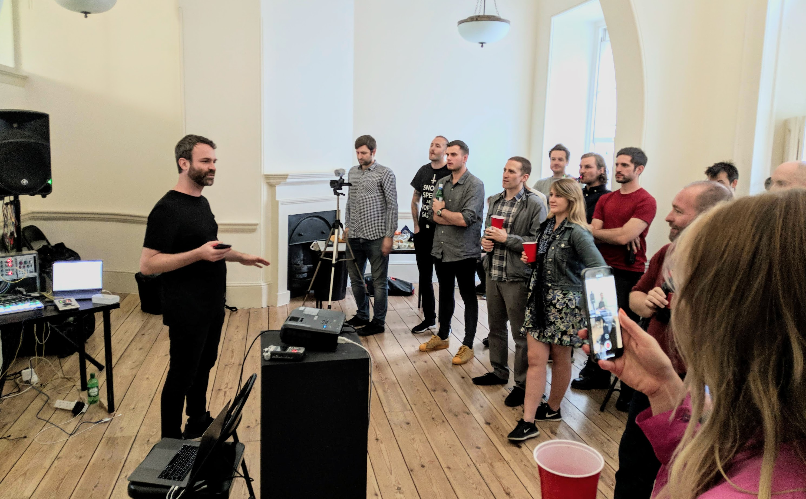
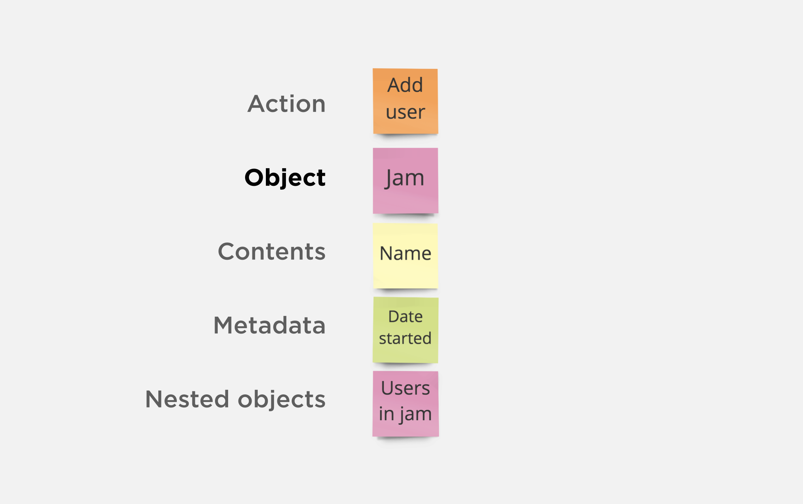
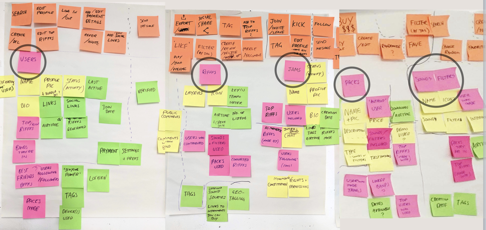
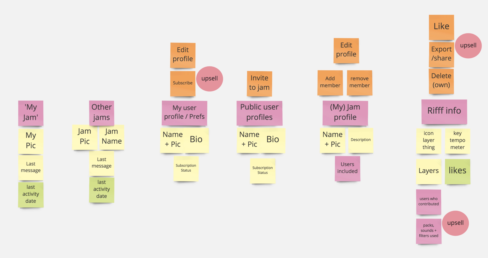
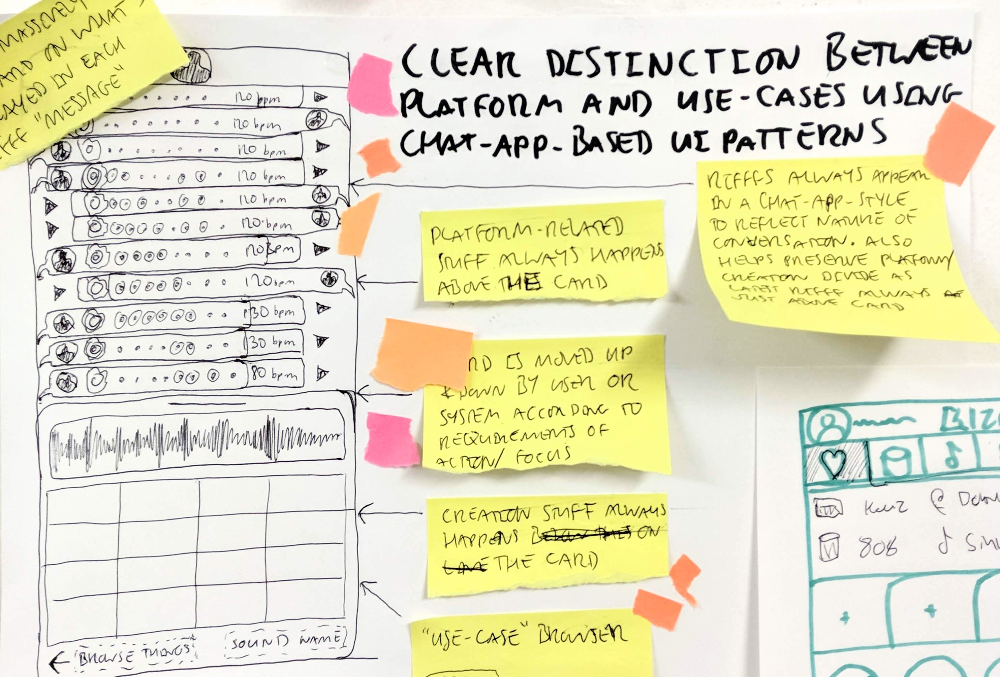
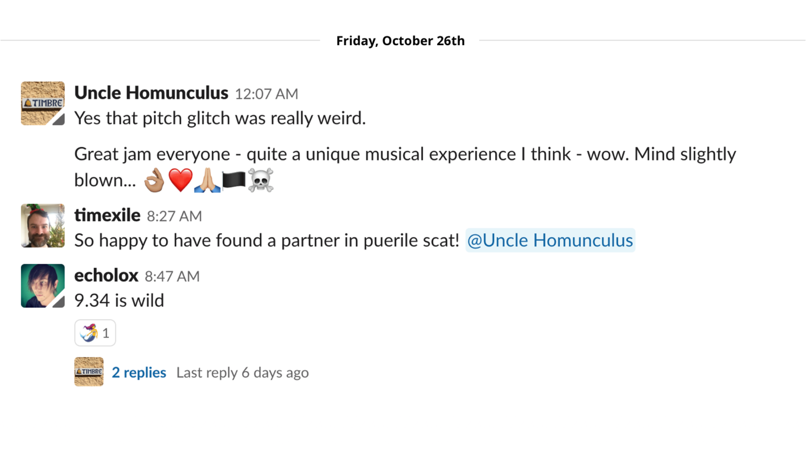
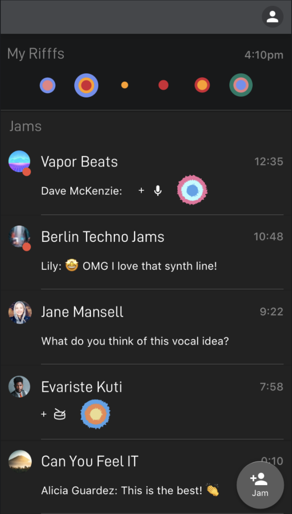
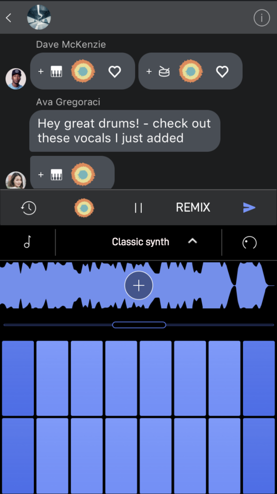
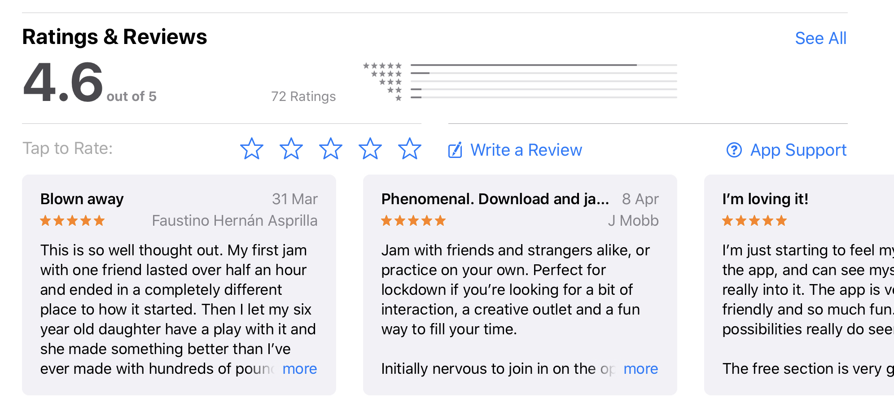
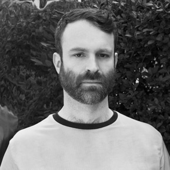

Endlesss is a startup with a bold aim: Make fun and collaboration the default for electronic music making. When I first spoke to them in mid-2018, they had a great-looking, powerful multiplayer instrument – that fit tons of features into a tiny screen. It was brilliant, but there were a few issues.
Challenges
- New users found the interface confusing
- Hierarchy of information unclear
- Feature set incomplete
- No space to add new features
Key learnings
- For complex workflows, hierarchy is king — Making the implicit structure of the app concrete in the interface made onboarding users way easier. I don’t think we have the best possible solution now, but we’re a good 50% closer, simply from re-organizing the interface to match the app structure.
- Building on familiar patterns is amazingly useful — Once we found an interaction pattern that was familiar to most users, everything else flowed way easier. The ‘chat’ paradigm became our guiding force for all decisions we made, and helped simplify our design process.
- Don’t hide controls — Anything that will add value to the user should be clearly visible. Features that are only revealed by swiping need to be clearly labelled, and highlighted during onboarding. Even then, users will miss them. Buttons over swipes or gestures!
- Sometimes, there’s no option but to hide the text — building complex apps on mobile is really challenging. 9 times out of 10 I recommend including a label with an icon, but for this particular interface, it just became too cluttered to have text labels everywhere. We have however gone for JUST text in one or two important instances, for example the ‘REMIX’ button — as you’ll see.
My role
I facilitated a series of workshops based on Design Sprint processes, and worked with the team to prioritise and build a roadmap to a Minimum Viable Product (MVP). Then in close collaboration with the team I prototyped and tested a new vision for the product.
Project Aims
- Clarify structure
- Build new navigation
- Add new features:
- Groups
- Subscriptions
- Purchases

Object Oriented UX
A key process I used was Sophia V Prater’s Object Oriented UX Mapping (OOUX). By documenting all the key objects in our system, we were able to better focus our MVP, and highlight both potential challenges and opportunities to encourage our users to subscribe.





Collaborative Sketching
I led the team through processes taken from the GV Design Sprint, going from understanding the current research and personas, through collaborative sketching workshops, into a lo-fidelity then hi-fidelity prototype and testing.
One idea in particular stood out:
Music as Chat
It didn’t look like much at first – but this sketch contained the germ of an idea that went on to redefine the entire product.


A New Product Vision
While our early beta testers were playing with the app, we were having a parallel conversation with them in Slack. It suddenly became an obvious idea to combine the two streams – the music and the chat.

Test chat
With this new way of looking at the product in place, other ‘chat app’ patterns became obvious solutions for navigation, and organising ‘chats’ (musical jams). We initially tested these ideas in a mid-fidelity prototype.
Vision in Development
Our success in testing the mid-fidelity prototype gave us the confidence to build out a high-fidelity and really dig into the ideas. These concepts allowed us to test deeper concepts quickly and gave inspiration to our engineers as they built out the next working version.


Launch!
Endlesss soft-launched in 2019, and has been going from strength to strength ever since. They’ve had over 80% ‘organic growth’ – users referring other users, and long in-app dwell times (as many as 7 hours at a stretch! Yes we’re concerned). I’m also a massive fan of the app, and a daily user. I was lucky enough to be able to join the team for events in Tromso and Berlin in 2019, and I work with them whenever I can. You can follow their progress here: endlesss.fm. Check out the product launch video below!
Results are in
The app has received glowing reviews and great press too!

Bill is a design superstar. He skilfully took us on a step by step journey that completely redesigned our product from the ground up in 3 weeks in the most gloriously user-centric way. Bill is an excellent communicator, a laser-focussed thinker and a natural leader with a clean but charismatic aesthetic sense.

Tim Shaw
Founder